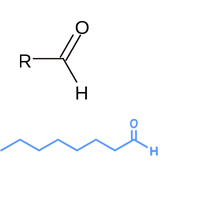
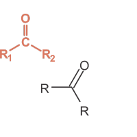

Score: 0 / 0
Functional Groups
- Functional groups are specific arrangements of atoms that give organic molecules their characteristic chemical properties and reactivity patterns.
- Aldehydes contain a carbonyl group bonded to at least one hydrogen atom, with the general structure R-CHO.

- Ketones contain a carbonyl group bonded to two carbon atoms, with the general structure R-CO-R.

- Alcohols contain a hydroxyl group (-OH) bonded to a carbon atom, making them polar and capable of hydrogen bonding.
- Carboxylic acids contain a carboxyl group (-COOH) that can donate protons, making them acidic compounds.
- Esters are formed from the reaction between carboxylic acids and alcohols, with the general structure R-COO-R.
- Amides contain a carbonyl group bonded to a nitrogen atom, commonly found in proteins and synthetic polymers.
- Phenols are aromatic alcohols with a hydroxyl group directly attached to a benzene ring, making them more acidic than regular alcohols.
- Aromatic compounds contain benzene rings or similar cyclic, planar structures with delocalized electrons.
- Heterocyclic compounds are ring structures that contain atoms other than carbon, such as nitrogen, oxygen, or sulfur.
- Oxidation reactions involve the loss of electrons, often converting alcohols to aldehydes/ketones or aldehydes to carboxylic acids.
- Reduction reactions involve the gain of electrons, often converting carbonyl groups to alcohols using reducing agents.
- Substitution reactions involve the replacement of one functional group or atom with another in organic molecules.
- Addition reactions involve the addition of atoms or groups across carbon-carbon double or triple bonds.
- Elimination reactions involve the removal of groups from adjacent carbons to form carbon-carbon double bonds.
- Aldol condensation is a reaction between aldehydes and ketones that forms carbon-carbon bonds, important in biosynthesis.
- Esterification is the reaction between a carboxylic acid and an alcohol to form an ester and water.
- Hydrolysis reactions use water to break chemical bonds, such as converting esters back to acids and alcohols.
- Electrophilicity is the tendency of a molecule to act as an electrophile, meaning it can accept electrons from a nucleophile during a chemical reaction.
- Nucleophilicity is the tendency of a molecule to act as a nucleophile, meaning it can donate electrons to an electrophile during a chemical reaction.
- Acidity is the tendency of a molecule to donate protons in a chemical reaction.
- Basicity is the tendency of a molecule to accept protons in a chemical reaction.
Dive deeper: Steric hindrance refers to the prevention of chemical reactions due to the spatial arrangement of atoms within a moleculE)It can affect reaction rates and mechanisms, particularly in substitution and elimination reactions. The inductive effect describes how the electron density is distributed in a molecule, influencing its reactivity and stability, while the resonance effect involves the delocalization of electrons across multiple atoms, stabilizing the moleculE)The linkages between peptide bonds is an amide bond. Nucleotides and nucleic acids are linked by phosphodiester bonds. Lipids are linked by ester bonds. Carbohydrates are linked by glycosidic bonds.